AgileX NERO
7축 로봇팔
안전 수칙과 사양, 설치와 CAN 연결, 좌표계와 영점, Wi-Fi · 이더넷 접속, 웹 제어 화면, 업그레이드와 유지 보수까지 AgileX 공식 사용 설명서를 한국어로 옮기고, SDK · ROS 2 빠른 시작, BrainCo Revo2 손과 듀얼암 구성, 문제 해결을 더했습니다.

이 설명서에 대하여
| 로봇 | AgileX NERO 7자유도 로봇팔 |
| 근거 문서 | AgileX NERO USER MANUAL V1.0.0 (agilexsupport.yuque.com, 2026-03-23 판) · AgileX NERO 用户手册 (중문판, kb.agilex.ai, 2026-11-04 판) · AgileX NERO Quick Start Guide (2026-11-09 판) · AgileX 지원 문서 (영점 교정 · 영점 복원 · 드래그 티칭 되튕김 · V1.121 업그레이드) · AgileX OPEN NERO 套件 用户手册 (2026-11-13 판, 표시등 · 점검 주기 · 고장 표) · WeGo Nero Operation Manual (2026-10-01, 한국어 표현) |
| SDK 대조 | AgileX pyAgxArm (GitHub master, d90e234, 2026-10-15) · agx_arm_ros (GitHub ros2 브랜치, 747d072, 2026-11-19) |
| 실측 자료 | WeGo 듀얼 NERO 원격조작 장비의 운용 · 코드 기록 (2026-10, CAN 이름 · 커널 로그 · Revo2 Touch 연결) |
| 함께 보는 책 | WeGo NERO Studio 사용 가이드 (NERO 원격조작 · 데이터 수집 소프트웨어) · BrainCo Revo2 다관절 손 운용 설명서 |
| 판 | 한국어판 · 2026.11.19 |
| 문의 | go.support@wego-robotics.com |
1 ~ 4장과 6 ~ 10장, 14장은 AgileX 공식 사용 설명서를 옮긴 것이며, 장 순서는 WeGo 설명서 형식에 맞췄습니다 (안전 수칙을 2장으로). 관절 동작 범위와 전원 전압은 더 새로운 중문판 · 빠른 시작 가이드의 값을 따랐습니다 (1장 참고 상자). 5장(좌표계와 영점), 11장(SDK · ROS 2), 12장(Revo2 손), 13장(듀얼암), 15장(문제 해결)은 AgileX 지원 문서와 SDK · ROS 2 드라이버 문서를 모아 새로 썼습니다. 다관절 손 화면은 중문판 6.3절에서 옮겼습니다. Wi-Fi 이름 · 비밀번호, 웹 계정과 IP 주소는 AgileX 문서에 적힌 공장 기본값입니다. 로봇팔을 여러 사람이 쓰는 네트워크에 두기 전에 핫스팟 비밀번호를 바꾸십시오.
© WeGo Robotics. AgileX, NERO는 AgileX Robotics의 상표입니다. 표지의 NERO 이미지는 공개 URDF 메시로 렌더링한 것이고, 본문 그림은 AgileX 사용 설명서의 그림입니다.
목차
- 01로봇팔 개요
- 02중요 안전 수칙
- 03기본 소개와 설치
- 04CAN 연결과 전원 투입
- 05좌표계와 영점
- 06로봇팔 접속
- 07웹 제어 화면
- 08사용자 제어 영역
- 09네트워크 설정
- 10업그레이드
- 112차 개발: SDK · ROS 2 · CAN
- 12BrainCo Revo2 손
- 13듀얼암 구성
- 14유지 보수와 비상 대응
- 15문제 해결
- 부록치수 도면
로봇팔 개요
NERO는 교육 · 연구, 소비자용 응용, 산업 자동화를 위해 설계된 7자유도 로봇팔입니다. 가반 하중은 3 kg이며, 휴머노이드 로봇 · 자동 조립 · 자동 운반 같은 연구와 산업 응용에 알맞습니다.
관절 일곱 개로 폭넓고 유연하게 움직이며, 정밀도와 반복성이 높습니다. 모듈식 설계로 정비와 업그레이드가 쉽고, 프로그래밍과 조작이 쉬운 직관적인 사용자 화면을 갖춰, 전문가가 아니어도 빠르게 시작할 수 있습니다. 과학 연구 · 교육 · 자동차 제조 · 전자 조립 · 식품 가공 · 실험실 자동화 · 의료 장비 조작 같은 분야에 널리 쓸 수 있습니다. 문서
구성품 문서
| 이름 | 수량 |
|---|---|
| 7자유도 로봇팔 | 1 |
| USB-to-CAN 모듈 | 1 |
| 전원 어댑터 (어댑터 + 전원 코드) | 1 |
| 마이크로 USB 케이블 | 1 |
| 베이스 고정 나사 | 4 |
| 베이스 고정 렌치 | 1 |
성능 사양 문서
| 항목 | 사양 |
|---|---|
| 자유도 | 7 |
| 가반 하중 | 3 kg |
| 무게 | 4.8 kg |
| 반복 위치 정밀도 | ±0.1 mm |
| 작업 반경 | 580 mm |
| 정격 전압 | DC 24 V (25 V를 넘지 않게. 4장) |
| 소비 전력 | 최대 ≤ 150 W · 종합 ≤ 60 W |
| 재질 | 알루미늄 합금 프레임 · 플라스틱 외장 |
| 컨트롤러 | 내장형 |
| 통신 방식 | CAN · HTTP · TCP |
| 제어 방식 | 드래그 티칭 · 오프라인 궤적 · API · 호스트 소프트웨어 티칭 |
| 외부 인터페이스 | 전원 × 1 · CAN × 1 · 이더넷 × 1 |
| 베이스 고정 치수 | 70 mm × 70 mm · M5 × 4 |
| 작동 환경 | 온도 −20 ~ 50 °C · 습도 25 ~ 85 % (결로 없음) |
| 소음 | < 60 dB |
| 설치 방식 | 바닥 · 측면 · 천장(거꾸로) 설치. AgileX 전 제품과 호환 |
| 관절 동작 범위 | J1 −157° ~ 157° · J2 −102° ~ 102° · J3 −160° ~ 160° · J4 −60° ~ 125° · J5 −160° ~ 160° · J6 −44° ~ 57° · J7 −97° ~ 97° |
| 관절 최대 속도 | J1 · J2 · J3 180°/s · J4 · J5 · J6 · J7 225°/s |
위 값은 AgileX가 정해진 시험 환경에서 측정한 결과입니다. 환경과 사용 조건에 따라 달라질 수 있습니다.
관절 범위는 AgileX 중문 사용 설명서(2026-11-04 판)와 빠른 시작 가이드(2026-11-09 판)의 값입니다. 영문 사용 설명서 V1.0.0(2026-03-23 판)에는 J2 −15° ~ 190°, J6 −43° ~ 58°, J7 −90° ~ 90°로 적혀 있습니다.
pyAgxArm SDK의 관절 한계 값은 J1 ±155°, J2 ±100°, J3 ±158°, J4 −58° ~ 123°, J5 ±158°, J6 −42° ~ 50°, J7 ±90°로 문서 값보다 안쪽입니다. 이 값은 set_joint_limits_enabled(True)로 켰을 때만 명령을 자르며, 기본값은 꺼짐입니다 (11장).
그리퍼 · 티칭 그리퍼 사양 (선택) 문서
| 항목 | 2지 그리퍼 | 티칭 그리퍼 |
|---|---|---|
| 무게 | 500 g | 550 g |
| 정밀도 | ±0.5 mm | ±0.5 mm |
| 열림 · 닫힘 거리 | 0 ~ 100 mm | 0 ~ 70 mm |
| 정격 집는 힘 | 40 N | 40 N (힘 제어 · 힘 피드백) |
| 최대 집는 힘 | 50 N | 50 N (힘 제어 · 힘 피드백) |
| 전원 전압 | DC 24 V | DC 24 V |
| 소비 전력 | 최대 ≤ 50 W · 종합 ≤ 30 W | 최대 ≤ 50 W · 종합 ≤ 30 W |
| 접촉면 재질 | 고무 | 고무 |
| 컨트롤러 | 내장형 | 내장형 |
| 통신 방식 | CAN · LAN | CAN |
| 제어 방식 | 드래그 티칭 · 오프라인 궤적 · API · 호스트 소프트웨어 | |
| 외부 인터페이스 | 전원 × 1 · CAN × 1 | |
| 설치 방식 | 플랜지 설치 | |
| 작동 환경 | 온도 −20 ~ 50 °C · 습도 25 ~ 85 % (결로 없음) | |
| 소음 | < 60 dB | |
다관절 손(BrainCo Revo2)은 12장, 두 팔 구성은 13장에서 설명합니다.
중요 안전 수칙
장치를 처음 쓰기 전, 특히 처음 전원을 넣기 전에 반드시 읽고 이해해야 하는 안전 정보입니다. 이 설명서의 조립 지침을 모두 따르고, 경고 표시가 붙은 글에 특히 주의하십시오. 문서
⚠ 표시는 피하지 않으면 사람이 다치거나 재산 피해, 심각한 장비 손상이 생길 수 있는 위험한 상황을 뜻합니다.
AgileX Robotics는 손상 · 변경 · 개조된 로봇팔로 생긴 손해에 책임지지 않으며, 프로그램 오류나 비표준 조작으로 로봇팔이나 다른 장비에 생긴 손해에도 책임지지 않습니다.
책임의 한계
이 로봇팔을 쓰면 이 사용 설명서와 안전 정보의 모든 조건과 내용을 읽고 이해하고 받아들인 것으로 봅니다. 사용자는 자신의 행동과 그 결과에 모든 책임을 지며, 로봇팔을 정당한 목적으로만 쓰고 이 조건과 AgileX Robotics의 관련 정책 · 지침을 따르는 데 동의합니다. 운용 중에는 사용 설명서와 안전 정보를 포함하되 이에 한정되지 않는 모든 요구 사항을 엄격히 지키십시오. 사용 지침을 지키지 않거나 피할 수 없는 요인으로 생긴 인명 피해 · 사고 · 재산 피해 · 법적 분쟁 · 이해 충돌에 AgileX Robotics는 책임지지 않습니다. 이 로봇팔은 만 18세 미만이거나 완전한 행위 능력이 없는 사람이 쓰기에 적합하지 않습니다. 이런 사람이 제품에 접근하지 못하게 하고, 이들이 있는 곳에서 조작할 때는 더욱 주의하십시오.
이 설명서는 로봇팔 응용 시스템 전체의 설계 · 설치 · 운용이나, 시스템 안전에 영향을 줄 수 있는 모든 주변 장비를 다루지 않습니다. 전체 시스템의 설계와 사용은 로봇팔을 설치하는 나라의 표준과 규정이 정한 안전 요구 사항을 따라야 합니다. 통합 업체와 최종 사용자는 관련 규정과 법을 지키고, 로봇팔 응용 시스템 전체에 중대한 위험이 없도록 할 책임이 있습니다. 이 책임에는 다음 항목이 포함되며, 이에 한정되지 않습니다.
유효성과 책임
- 로봇팔 시스템 전체의 위험성 평가를 합니다.
- 위험성 평가에서 정한 기계용 안전장치를 추가로 갖춥니다.
- 소프트웨어와 하드웨어를 포함한 로봇팔 시스템 전체의 설계 · 설치가 정확한지 확인합니다.
- 관련 규정과 법에 따라 로봇팔과 관련된 모든 기능의 안전성을 평가하여, 실제 응용에서 중대한 위험이 없도록 합니다.
- 장비를 조작하기 전에 잠재적인 안전 위험을 알아 둡니다.
- 사용자가 어떤 안전 조치도 바꾸지 않게 합니다.
- 위험성 평가서와 이 설명서를 포함한 모든 문서를 기술 파일로 모아 둡니다.
환경
- 처음 쓰기 전에 이 설명서를 읽고 기본 조작과 사양을 이해하십시오.
- 비교적 트인 곳에서 쓰십시오. 로봇팔에는 자동 장애물 회피 기능이나 감지 센서가 없습니다.
- 주위 온도가 −20 ~ 50 °C인 곳에서 쓰십시오.
- 방진 · 방수 등급은 별도 주문이 아니면 IP22입니다.
점검
- 로봇팔에 눈에 띄는 이상이 없는지 확인하십시오.
- 쓰는 동안 모든 배선이 단단히 연결되어 있는지 확인하십시오.
조작
- 작동 중에는 로봇팔 주변을 비워 두십시오.
- 로봇팔이 보이는 곳에서 조작하십시오.
- 최대 가반 하중은 3 kg입니다. 하중이 이를 넘지 않게 하십시오.
- 이상이 생기면 2차 손상을 막기 위해 즉시 사용을 멈추십시오.
- 장치가 고장 나면 기술 담당자에게 연락하고, 허가 없이 직접 고치지 마십시오.
- IP 등급에 맞는 환경에서 쓰십시오.
사용 경고 ⚠
- 로봇팔과 공구 · 엔드 이펙터가 언제나 바르게, 단단히 고정되어 있어야 합니다.
- 로봇팔 작업 공간에 들어가야 할 때는 보안경과 보호구를 착용하십시오.
- 로봇팔이 막힘없이 움직일 공간을 확보하십시오.
- 위험성 평가에서 정한 안전 조치를 갖추십시오.
- 헐렁한 옷을 입고 조작하지 말고, 긴 머리는 묶으십시오.
- 손상되었거나 이상 징후가 있는 로봇팔은 쓰지 마십시오.
- 호스트 소프트웨어에 오류 메시지가 뜨면 즉시 비상 정지하고 기술 담당자에게 연락하십시오.
- 작동 중이거나 작동을 시작하기 전에는 머리 · 얼굴 등 몸을 로봇팔이 닿는 범위 밖에 두십시오.
- 로봇팔을 개조하지 마십시오. 개조는 예측할 수 없는 위험을 만듭니다.
- 로봇팔을 영구 자기장에 두지 마십시오. 강한 자기장은 로봇팔을 손상시킬 수 있습니다.
- 로봇팔은 작동 중 열이 납니다. 작동 중이나 멈춘 직후에는 만지지 마십시오. 전원을 끊고 한 시간 기다려 완전히 식히십시오.
- 다른 기계를 연결하면 위험이 커지거나 새로 생길 수 있습니다. 설치 전체의 위험성 평가를 하십시오. 위험성 평가 결과에 따라 기능 안전 수준이 달라질 수 있으므로, 서로 다른 안전 · 비상 정지 성능 수준이 필요하면 언제나 가장 높은 수준을 고르십시오. 설치에 쓰는 모든 장비의 설명서를 읽고 이해하십시오.
사용 전 주의 사항
- 관절 영점 설정: 관절 영점은 로봇팔이 기본 수직 직립 자세일 때 설정해야 합니다. 그렇지 않으면 티칭 모드와 리더 · 팔로워 모드의 중력 보정이 제대로 동작하지 않을 수 있습니다.
- 모드 관리: 시스템은 상태 기계로 모드를 관리합니다. 티칭 모드, 궤적 모드, 리더 · 팔로워(협업 제어) 모드, 웹 제어 모드는 서로 독립적입니다. 예를 들어 궤적 제어 중에 속도를 바꾸려면 먼저 WEB 버튼을 눌러 웹 제어 모드로 바꿔야 합니다. 모드를 바꾸면 궤적 동작이 멈추고, 그 뒤에 속도를 설정할 수 있습니다.
- 자동 영점 설정: 모터가 먼저 기계적 한계 위치까지 갔다가 올바른 위치로 돌아옵니다. 이 과정에서 로봇팔을 막거나 건드리지 마십시오.
- J6 교정: J6의 영점을 수동이나 자동으로 설정하면 이어서 교정 과정이 실행됩니다. 이 과정을 막지 마십시오.
- 리더 · 팔로워 연결: 리더 팔과 팔로워 팔을 연결할 때 두 팔의 자세를 가깝게 맞춰 두십시오. 그렇지 않으면 팔로워 팔이 리더 팔을 따라가려고 빠르게 움직여 위험합니다.
- 그리퍼 리더 · 팔로워 제어: 그리퍼를 리더 · 팔로워 방식으로 제어하려면 사용자 정의 컨트롤러 칸에서 "Gripper" 형식을 고르고, 그리퍼를 활성화한 뒤 조작하십시오.
- 기구학 제어: 기구학 제어 중에는 J2 · J3 · J4 · J5를 될 수 있으면 0 위치에 두지 마십시오. 그래야 로봇팔이 특이 자세에 들어갈 위험이 줄어듭니다.
- 기존 그리퍼 호환: 예전에 산 PiPER 그리퍼를 NERO에 쓰는 경우(새로 산 경우는 해당 없음), 처음 쓰기 전에 《Nero Gripper ID Modification Guide》에 따라 그리퍼 ID를 바꿔야 합니다. 바꾸지 않으면 ID가 겹쳐 기구학과 중력 보정에 심각한 영향을 줍니다.
- 설치 방향 정의: 측면 설치는 기본 영점 자세에서 이더넷 포트가 아래를 향하게 설치하는 것이고, 천장 설치는 로봇팔을 완전히 거꾸로 설치하는 것입니다.
기본 소개와 설치
NERO는 7자유도 로봇팔이며, 엔드 이펙터 가반 하중은 3 kg입니다. 경량 설계로 높은 가반 하중을 유지하면서도 빠르게 움직이며, 체화 지능(embodied AI) 연구에서 실제 환경 데이터를 모으는 데 널리 쓸 수 있습니다. 문서

전기 인터페이스 문서
전기 패널
베이스 패널에는 항공 커넥터 · 표준 이더넷 포트 · Wi-Fi 안테나 · 상태 표시등이 있습니다. 항공 커넥터에는 선이 두 묶음 있습니다. 한 묶음은 로봇팔에 전원을 공급하고, 다른 묶음은 상위 시스템과 로봇팔 사이의 CAN 통신에 씁니다.
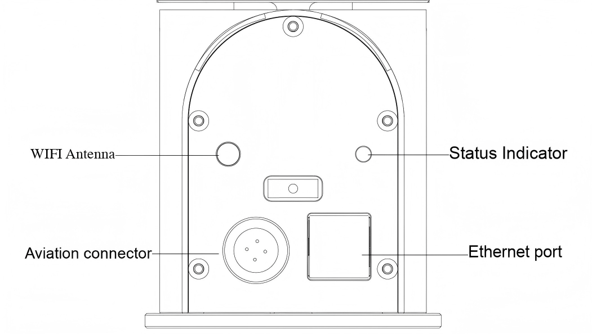

베이스 패널의 빨간 점과 케이블의 빨간 점을 맞춥니다. 커넥터에서 무늬가 있는 부분은 힘을 주면 뒤로 밀립니다. 끼울 때는 빨간 점을 맞춰 곧게 밀어 넣고, 뺄 때는 무늬가 있는 부분을 누른 채 당깁니다.
베이스 패널의 내부 CAN 포트는 외부 인터페이스가 아닙니다. AgileX 기술 지원이 기술 서비스 중에 로봇팔 데이터를 읽는 데만 씁니다. 평소에는 어떤 선도 꽂지 말고, AgileX 기술 지원의 허가 없이 쓰지 마십시오.
상태 표시등
| 표시등 | 뜻 |
|---|---|
| 녹색 켜짐 | 로봇팔이 정상이며 Enable된 상태입니다. |
| 빨간색 켜짐 | 로봇팔이 Disable 상태이거나 이상이 있습니다. 웹 제어 화면 첫 화면에서 로봇팔 상태를 확인하십시오 (7장). |
전원을 막 넣으면 표시등이 잠깐 녹색으로 켜졌다 꺼지고(메인 프로그램 시작), 이어서 빨간색으로 켜집니다(아직 Enable하지 않은 상태). 정상 대기 상태이므로 다음 단계로 넘어가면 됩니다 (AgileX OPEN NERO 키트 설명서). 4장의 전원 투입 순서에는 '녹색으로 깜박일 때까지 기다린다'고 적혀 있으나, 깜박임의 뜻은 AgileX 문서에 따로 없습니다 (확인 필요).
엔드 이펙터 연결
끝 관절에는 XT30 2+2 인터페이스가 있으며, 전원 · CAN 핀 배치는 아래 그림과 같습니다. 전압은 24 V, 최대 전류는 2 A입니다.
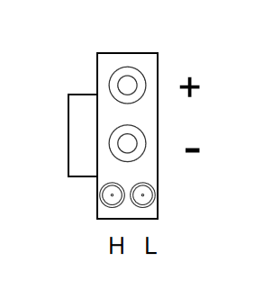
엔드 이펙터 CAN 통신은 AgileX 장치만 지원합니다. 다른 CAN 장치를 허가 없이 연결하면 통제할 수 없는 손상이 생길 수 있으므로 절대 연결하지 마십시오.
작업 공간과 가반 하중 문서
아래 기구학 그림은 로봇팔의 동작 공간 경계와 관절 동작 범위를 보여 줍니다. 작업대 배치 · 궤적 계획 · 안전 조치 설계의 기준으로 쓰십시오.
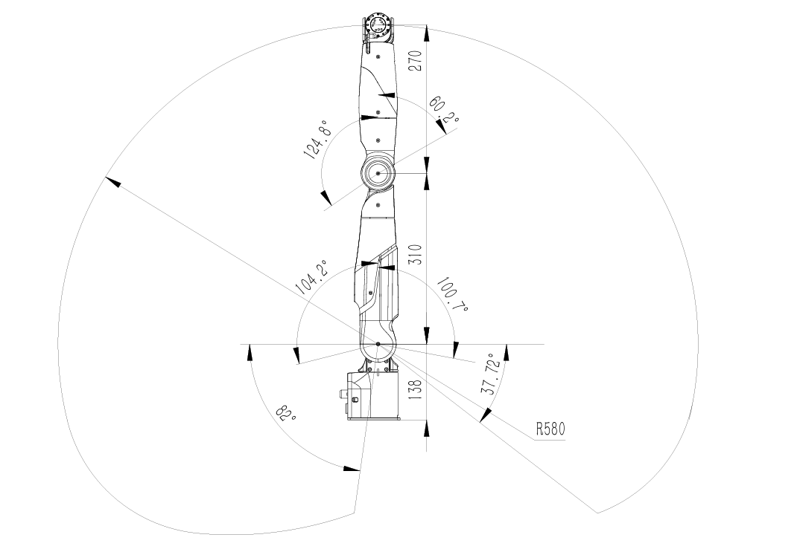

기계 설치 문서
베이스 고정
베이스는 나사로 고정합니다. 베이스에 M5 관통 나사 구멍 네 개가 있고, 부속품 봉투에 M5 나사 네 개와 육각 공구가 들어 있습니다. 구멍 간격은 70 mm입니다. 이동 장비나 고정 플랫폼용 어댑터를 설계할 때는 구멍을 70 mm 간격으로 내면 됩니다.

그리퍼 · 티칭 그리퍼 설치
끝단에는 플랜지로 공구를 달 수 있습니다. 선택 부속품으로 2지 그리퍼, 티칭 그리퍼, 다관절 손이 있습니다. 다관절 손(BrainCo Revo2) 설치는 12장을 보십시오.
- 로봇팔을 설치대에 고정합니다.그리퍼(또는 티칭 그리퍼)와 플랜지 부속품(플랜지와 볼트)을 꺼냅니다.
- 플랜지를 설치합니다.M3 × 6 육각 렌치 볼트(접시머리) 6개로 배플을 모터 출력축에 고정하고, M3 × 8 육각 렌치 볼트(접시머리) 4개로 배플 양쪽에 플랜지를 고정합니다.
- 그리퍼를 끼웁니다.그리퍼와 티칭 그리퍼의 뒤 덮개는 오삽입 방지 구조입니다. 아래의 설치 방향을 맞춰 끼운 뒤 M2.5 × 6 육각 렌치 볼트(접시머리)로 고정합니다.
- 케이블을 연결합니다.부속품의 전원 · 통신 케이블을 끝 관절 인터페이스와 그리퍼의 인터페이스에 꽂습니다.
- 전원과 CAN을 연결합니다.항공 케이블을 로봇팔에 연결하고, USB-to-CAN 모듈을 항공 케이블에 연결합니다(노란색 선은 CAN-H, 파란색 선은 CAN-L). 모듈의 USB 케이블을 컴퓨터에 꽂고, 항공 케이블을 어댑터에 연결한 뒤 어댑터 전원을 넣습니다.
그리퍼 고정 볼트는 빠른 시작 가이드(영문 · 중문, 2026-11 판)에 M2.5 × 6, 중문 사용 설명서(2026-11-04 판)에 M3 × 6으로 적혀 있습니다. 부속품 봉투의 볼트와 그리퍼 구멍을 확인하고 쓰십시오 (확인 필요).
그리퍼 설치 방향
새 그리퍼는 호환성을 높이려고 바닥의 평평한 면을 한쪽에서 양쪽으로 늘렸습니다. 그리퍼에 단 카메라가 잘 보이도록 설치 방향에 주의하십시오.
- 표준 방향: 그리퍼에서 카메라 장착 구멍이 있는 쪽을 끝 관절의 XT30 (2+2) 인터페이스와 같은 쪽에 둡니다.
- 측면 방향: 표준과 반대로, 카메라 장착 구멍이 있는 쪽을 XT30 (2+2) 인터페이스가 없는 쪽에 둡니다.
책상 설치 모듈
책상 설치 모듈은 기본 구성에 들어 있지 않은 선택 부속품입니다. 치수는 아래 그림과 같습니다. 로봇팔을 쓰기 전에 모듈이 단단히 고정되었는지 확인하십시오.
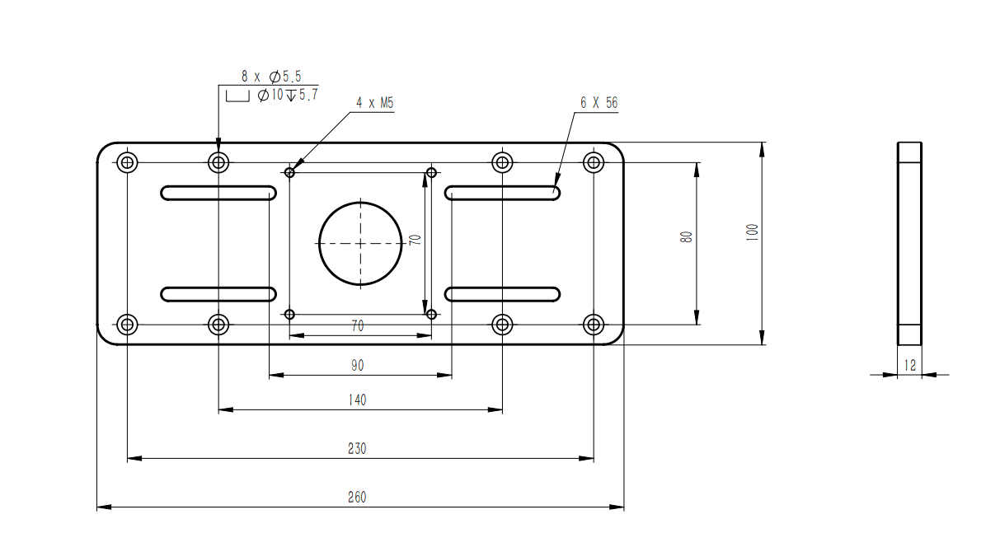
CAN 연결과 전원 투입
항공 커넥터의 CAN 선을 USB-to-CAN 모듈에 연결하고, 순서대로 전원을 넣습니다. 문서
CAN 케이블 연결
항공 커넥터의 CAN 케이블에서 CAN_H와 CAN_L 선을 각각 USB-to-CAN 모듈에 연결하고, 모듈을 노트북의 USB 포트에 꽂습니다.

CAN_H(노란색)와 CAN_L(파란색) 선은 단자 가운데에 넣고, 나사를 돌려 금속판이 선을 누르게 합니다. 물린 뒤 선을 당겨 빠지지 않는지 확인하십시오. 피복이 덜 벗겨져 구리선이 단자에 닿지 않으면 CAN 데이터가 오지 않습니다 (15장).
로봇팔 공급 전압이 25 V를 넘으면 회로가 손상됩니다. 기본 어댑터가 아닌 외부 전원을 쓰면 정전압(안정화) 전원이어야 하고 전류는 10 A 이상이어야 합니다. 영문 사용 설명서 V1.0.0에는 상한이 26 V로 적혀 있으나, 더 새로운 중문 사용 설명서와 빠른 시작 가이드의 25 V를 따르십시오.
처음 전원 넣기

- CAN 케이블을 연결합니다.항공 커넥터의 CAN 케이블을 장치 B의 CAN_H와 CAN_L 단자에 각각 연결합니다.
- XT30 커넥터를 끼웁니다.장치 C의 XT30 오삽입 방지 커넥터를 방향에 맞춰 끼웁니다.
- 항공 커넥터를 끼웁니다.항공 커넥터 D의 빨간 점을 베이스 소켓의 빨간 점과 맞춰 끼웁니다.
- 어댑터 E를 콘센트에 연결합니다.
- 전원을 확인합니다.AC 플러그 F가 제대로 꽂혀 전원이 들어오는지 확인하고, 베이스 전기 패널의 표시등이 녹색으로 깜박일 때까지 기다립니다.
- USB 케이블 G를 컴퓨터에 연결합니다.이제 로봇팔을 쓸 수 있습니다.
DH 파라미터
| 관절 | ai−1 (m) | αi−1 (°) | di (m) | θi offset (°) |
|---|---|---|---|---|
| j1 | 0 | 0 | 0.138 | 0 |
| j2 | 0 | 90 | 0 | 180 |
| j3 | 0 | 90 | 0.31 | 180 |
| j4 | 0 | 90 | 0 | 180 |
| j5 | 0 | 90 | 0.27001 | 90 |
| j6 | 0 | 90 | 0 | 90 |
| j7 | 0 | 90 | 0.0235 | 0 |
좌표계와 영점
베이스 · 플랜지 · TCP 좌표계와 자세 표기, 피해야 할 특이 자세, 관절 영점의 정의와 설치 방식별 교정 방법을 설명합니다.
좌표계 SDK
- 베이스 좌표계 (
base_link): 로봇팔 베이스에 고정된 기준 좌표계입니다. SDK와 ROS 2 드라이버의 위치 · 자세 명령과 피드백은 이 좌표계 기준입니다. - 플랜지 (
link7): 마지막 링크의 장착면으로, 공구 · 엔드 이펙터를 다는 기계 인터페이스입니다. SDK의get_flange_pose()는 이 면의 자세를 돌려줍니다. - TCP (
tcp_link): 공구 중심점입니다. TCP 오프셋을 넣지 않으면 플랜지(link7)와 같습니다. 오프셋은 플랜지 좌표계에서[x, y, z, rx, ry, rz]로 줍니다.
| 값 | 단위 · 범위 |
|---|---|
| 위치 x, y, z | m |
| 자세 roll, pitch, yaw | rad, X · Y · Z축 회전. roll · yaw는 −π ~ π, pitch는 −π/2 ~ π/2 |
| 관절 각 | rad, 일곱 개 값 [j1, j2, j3, j4, j5, j6, j7] |
| TCP 오프셋 | 플랜지 좌표계의 [x, y, z, rx, ry, rz] (m · rad). SDK는 set_tcp_offset(), ROS 2는 실행 인자 tcp_offset |
SDK의 set_tcp_offset() 값은 SDK 안에만 저장되고 컨트롤러로 보내지지 않습니다. 웹 제어 화면의 '엔드 이펙터 구성'(8장)은 공구의 질량 · 무게 중심 · 크기를 넣어 토크를 보상하는 설정으로, TCP 오프셋과 다릅니다.
웹 제어 화면 Point · Line · Circle에 넣는 x, y, z, rx, ry, rz의 단위(mm · ° 여부)는 AgileX 문서에 없습니다 (확인 필요).
좌표축 방향은 ROS 2 드라이버(11장)를 설치한 뒤 RViz에서 볼 수 있습니다. 다관절 손을 단 모델은 effector_type:=revo2 revo2_type:=left를 덧붙입니다.
ros2 launch agx_arm_description display.launch.py arm_type:=nero
설치 자세와 중력 방향 문서
웹 제어 화면의 설치 자세 설정(8장)은 좌표계 교정의 기본 단계이며, 중력 보정과 공간 좌표 계산의 기준이 됩니다. 실제 설치와 다르게 설정하면 모델의 중력 방향이 실제와 달라져 드래그 티칭 · 리더 모드에서 관절이 되튕기거나 무겁게 끌립니다 (15장).
- 바닥 설치: 표준 설치 방식입니다.
- 측면 설치: 기본 영점 자세에서 이더넷 포트가 아래를 향하게 설치합니다.
- 천장 설치: 로봇팔을 완전히 거꾸로 설치합니다.
특이 자세 문서
기구학 제어(Point · Line · Circle, move_p · move_l · move_c) 중에는 J2 · J3 · J4 · J5를 될 수 있으면 0 위치에 두지 마십시오. 그래야 특이 자세에 들어갈 위험이 줄어듭니다.
특이 자세에 걸리면 로봇팔 상태가 '특이점'(arm_status 0x03, 15장)으로 바뀝니다.
특이 자세에 가까워지면 관절이 갑자기 크게 움직일 수 있습니다. 목표 자세를 정할 때 작업 공간 안에 사람이 없게 하고, 처음에는 속도를 낮춰 시험하십시오.
영점 문서
관절 영점은 로봇팔이 수직으로 곧게 선 기본 자세입니다. 표준 영점은 로봇팔과 설치 방식이 무엇이든 하나뿐입니다. 표준 설치 방식은 바닥 설치에 그리퍼가 없는 상태입니다. 영점이 어긋나면 티칭 모드와 리더 모드의 중력 보정이 틀어지고, 영점으로 돌려도 수직으로 서지 않습니다. 운반 중 진동, 충돌, 배터리 이상, 모터 · 엔코더를 바꾼 뒤 다시 교정하지 않은 경우에 어긋날 수 있습니다.
| 설치 방식 | 자동 교정 | 수동 교정 |
|---|---|---|
| 바닥 설치 (그리퍼 없음) | 쓸 수 있습니다 | 쓸 수 있습니다 |
| 측면 설치 (그리퍼 없음) | 설치 자세를 먼저 '측면'으로 설정하고, 관절 하나씩만 | 쓸 수 있습니다 |
| 그리퍼 · 부하 장착 | 쓸 수 없습니다 | 쓸 수 있습니다 |
천장 설치 같은 비표준 설치나 부하가 있을 때는 수동 교정을 쓰십시오. 중력 보정에 영향을 주는 모든 요인이 자동 교정 결과에도 영향을 줍니다.
교정 전 준비
- 로봇팔에 전원이 들어와 있고 고장이 없으며, 각 관절이 정상으로 움직이는지 확인합니다.
- 설치 방식(바닥 · 측면 · 그 밖)과 끝단 부하(그리퍼 등)가 있는지 확인합니다.
- 로봇팔이 움직이는 범위 안을 비웁니다. 자동 교정 때는 반경 1 m 안의 물건을 모두 치우십시오.
- 자동 교정 전에는 로봇팔을 영점에 가까운 자세로 옮겨 둡니다. 중력 보정 방향 차이의 영향이 줄어듭니다.
자동 교정 중에는 모터가 기계적 한계 위치까지 갔다가 돌아오므로 로봇팔이 크게 움직입니다. 주변에 사람과 물건이 없게 하고, 이 과정을 막거나 건드리지 마십시오. J6은 영점을 설정한 뒤 교정 과정을 한 번 더 실행합니다 (2장).
자동 교정: 모든 관절 (바닥 설치 · 그리퍼 없음)
- 모든 관절을 Enable합니다.웹 제어 화면에서 관절을 '전체'로 고르고 Enable을 누릅니다.
- 영점 설정 창을 엽니다.도구 모음의 영점 설정(Set Origin) 버튼을 누릅니다.
- '전체' 관절과 Auto Set을 고르고 Confirm을 누릅니다.교정이 끝날 때까지 기다립니다.
자동 교정: 관절 하나 (측면 · 바닥 설치)
- 설치 자세를 설정합니다.시스템 설정의 설치 자세를 '측면' 또는 '바닥'으로 바꾸고 확인합니다. 측면 설치에서 이 설정이 틀리면 중력 보정 방향이 틀려 교정이 실패합니다.
- 모든 관절을 Enable하고 영점 설정 창을 엽니다.
- 교정할 관절 하나와 Auto Set을 고르고 Confirm을 누릅니다.
수동 교정: 모든 관절
- 모든 관절을 Disable합니다.Disable하면 팔이 바로 떨어지므로 팔을 손으로 받친 채 누르십시오.
- 로봇팔을 손으로 영점 자세(수직으로 곧게 선 자세)로 옮깁니다.
- 영점 설정 창에서 '전체' 관절을 고르고 확인합니다.
- 모든 관절을 Enable합니다.로봇팔이 새 영점으로 돌아갑니다.
수동 교정: 관절 하나
- 교정할 관절만(또는 모든 관절을) Disable합니다.
- 그 관절을 손으로 영점 위치로 돌리고, 영점 설정 창에서 그 관절의 영점을 설정합니다.
영점 복원: 영점 자세가 수직이 아닐 때
- 끝단 부하를 뗍니다.그리퍼 · 티칭 그리퍼 · 다관절 손을 떼고, 웹 제어 화면에서 부하 없음으로 설정합니다.
- 모든 관절을 자동 교정합니다.영점 설정 창에서 '전체' 관절과 Auto Set을 고르고 Confirm을 누릅니다. 로봇팔이 공장 복원 절차대로 영점을 다시 잡아 수직으로 섭니다.
SDK로 영점 설정
펌웨어 1.11 이상에서는 pyAgxArm의 calibrate_joint()로 현재 위치를 관절 영점으로 정할 수 있습니다. 관절을 Disable하고 손으로 영점에 맞춘 뒤 실행합니다 SDK.
robot.disable(1) # J1 Disable (팔을 받치십시오) input("J1을 영점에 맞춘 뒤 Enter") robot.calibrate_joint(1) # 현재 위치를 J1 영점으로 (255 = 모든 관절) robot.enable(1)
로봇팔 접속
웹 제어 화면에는 로봇팔의 Wi-Fi 핫스팟이나 이더넷으로 접속합니다. 문서
Wi-Fi
| 항목 | 값 |
|---|---|
| Wi-Fi 이름 | agx-7ax-xx (xx는 로봇마다 다름) |
| Wi-Fi 비밀번호 | 12345678 |
| 웹 로그인 주소 | http://192.168.31.1/ |
| 웹 로그인 계정 | admin / 123456 |
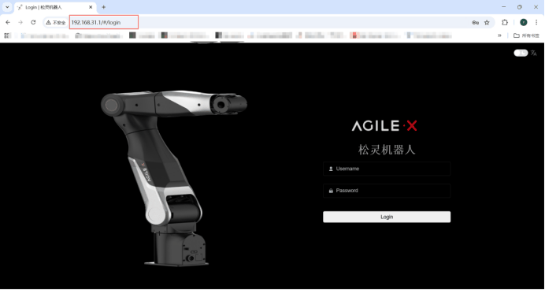
공장 기본 비밀번호는 누구나 알 수 있습니다. 여러 사람이 있는 곳에서 쓰면 핫스팟 비밀번호를 바꾸십시오 (9장).
이더넷
이더넷 케이블의 한쪽 끝을 컨트롤러의 네트워크 포트에, 다른 쪽 끝을 컴퓨터나 LAN의 네트워크 포트에 연결합니다. 연결되면 이더넷 포트 표시등이 자주 깜박입니다.
로봇팔 컨트롤러의 기본 IP 주소는 10.90.0.150입니다. 연결된 모든 컴퓨터의 IP 주소가 컨트롤러와 같은 네트워크 대역에 있어야 통신할 수 있습니다.
웹 제어 화면
웹 제어 화면(Web-Based Host Computer)의 구성과 상단 기능 버튼을 설명합니다. 문서

시스템 사용률
로봇팔에는 제어 보드가 내장되어 있습니다. 시스템 사용률에는 메인 보드의 디스크 · CPU · 메모리 점유율이 표시됩니다. 이 제어 보드는 사용자에게 개방되어 있지 않습니다.

로봇팔 상태
로봇팔 각 관절 모터의 상태를 표시합니다.

상단 기능 버튼
| 기능 | 버튼 | 설명 |
|---|---|---|
| 로봇팔 속도 | 버튼을 끌어 로봇팔의 이동 속도를 조절합니다. | |
| 비상 정지 | 로봇팔의 움직임을 즉시 멈춥니다. | |
| 웹 모드 |  | 웹 제어 모드로 바꿉니다. |
| 오류 해제 | 로봇팔 관절의 오류 정보를 지웁니다. | |
| 활성화 |  | 관절 하나 또는 모든 관절을 활성화합니다. |
| 시스템 재시작 | 웹 운영 체제 전체를 재시작합니다. | |
| 검색 |  | 검색 기능입니다. |
| 중문 · 영문 전환 | 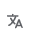 | 웹 제어 화면의 언어를 바꿉니다. |
| 전체 화면 |  | 웹 페이지를 전체 화면으로 표시합니다. |
| 알림 | 알림 기능입니다. | |
| 웹 설정 |  | 화면을 취향에 맞게 설정합니다. |
사용자 제어 영역
동작 제어 · 드래그 티칭 · 협업 제어 · 속도 · 궤적 · 영점 설정 · 시스템 설정을 설명합니다. 문서
동작 제어
| 모드 | 동작 | 참고 |
|---|---|---|
| Point | 엔드 이펙터 위치(x, y, z, rx, ry, rz)를 넣고 Apply를 누르면 그 위치로 움직입니다. x · y · z 아이콘으로 좌표를 늘리거나 줄인 뒤 Apply를 눌러도 됩니다. | 넣은 위치에 도달할 수 없으면 움직이지 않고 오류 알림이 뜹니다. |
| Circle | 시작점 · 중간점 · 끝점(각각 x, y, z, rx, ry, rz)을 넣으면 세 점으로 원호 동작을 계획해 실행합니다. | 넣은 위치나 계획된 원호에 도달할 수 없는 곳이 있으면 움직이지 않고 오류 알림이 뜹니다. |
| Joint | 관절 각도를 넣고 Apply를 누르면 실행됩니다. 슬라이더로 값을 바꿔도 되며, 이때도 Apply를 눌러야 적용됩니다. | 관절 제한을 넘는 각도는 실행되지 않습니다. 관절 제한 범위 안에서 명령하십시오. |
| Line | 위치와 자세(x, y, z, rx, ry, rz)를 넣으면 그 위치까지 직선으로 움직입니다. | 목표점이나 계획된 직선 경로에 도달할 수 없는 곳이 있으면 동작의 해를 구할 수 없습니다. |
| MIT | 대상 관절 번호를 고르고 관절 각도, 속도, kp(위치 이득), kd(속도 이득), 관절 토크를 넣습니다. | 관절 모터의 위치 · 속도 · 토크를 직접 제어합니다. 관련 파라미터(목표 속도 · kp · kd · 토크)를 조절해 위치 · 속도 · 토크를 섞어 제어할 수도 있습니다. 비교적 위험한 모드입니다. 쓰기 전에 기술 지원팀에 확인하십시오. |
웹 제어 화면으로 제어하다가 이 알림이 뜨면 웹 제어 모드가 아닌 것입니다. 화면 위쪽의 WEB 버튼을 눌러 웹 제어 모드로 바꾸십시오.
드래그 티칭
- 새 티칭 프로그램을 추가합니다.티칭 이름을 넣고 확인합니다.
- 조작 패널에서 Add를 누릅니다.로봇팔이 중력 보정 모드로 바뀌어 손으로 끌어 움직일 수 있습니다.
- 기록이 끝나면 Pause를 눌러 마칩니다.

다관절 손
끝단에 단 다관절 손을 제어하는 화면(Dexterous Hand 탭)입니다. 12장에서 설명합니다.
협업 제어 (리더 · 팔로워)
이 화면에서 로봇팔의 작동 모드를 정하고 바꿉니다.
normal: 독립 작동 모드입니다. 리더 · 팔로워 협업에 참여하지 않고 독립된 장치로 작동합니다.leader: 지금 제어하는 로봇팔을 리더 장치로 지정합니다. 리더 팔이 움직임을 주도하며 팔로워 팔을 구동합니다.follower: 지금 제어하는 로봇팔을 팔로워 장치로 지정합니다. 팔로워 팔은 리더 팔의 이동 명령을 실시간으로 따라가며 동기화된 움직임을 만듭니다.
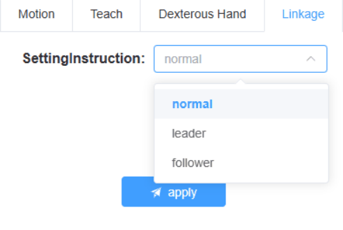
두 로봇팔을 모두 팔로워 모드로 두지 말고, 두 팔이 연결된 상태에서 CAN 푸시를 동시에 켜지 마십시오. 그렇지 않으면 외부 네트워크 CAN 통신에 이상이 생기며, 이때는 장치를 다시 시작해야 합니다. 연결하기 전에 두 팔을 모두 영점 가까이에 두십시오. 리더 · 팔로워로 정하면 팔로워 팔이 리더 팔의 자세로 빠르게 따라갑니다 (13장).
pyAgxArm 문서에 따르면 펌웨어 1.12부터 컨트롤러의 normal 모드가 없어지고 leader · follower만 남으며, 기본값은 follower입니다. CAN 피드백도 전원을 넣으면 바로 나옵니다 (11장).
펌웨어 1.12 이상에서 웹 제어 화면에 normal이 어떻게 보이는지는 AgileX 문서에 없습니다 (확인 필요).
속도 조절
속도 조절 화면에서 슬라이더를 끌어 로봇팔 전체 속도를 백분율로 조절합니다.
궤적
궤적 관리는 로봇팔 운동 궤적의 생성 · 관리 · 실행 · 저장을 묶은 화면입니다. 여러 이동 지점(motion points)으로 이어진 경로를 계획하고, 저장하고, 불러오고, 일괄 처리할 수 있습니다.
| 버튼 | 설명 |
|---|---|
| New Trajectory | 새 빈 궤적을 만듭니다. |
| Refresh | 아래 궤적 목록을 새로 고쳐 최신 상태로 표시합니다. |
| Export | 고른 궤적 파일을 백업 · 공유용으로 PC에 내보냅니다. |
| Import | PC에 있는 궤적 파일을 불러옵니다. |

영점 설정
오래 쓰면 기계적 마모 같은 원인으로 관절의 영점이 어긋날 수 있습니다. 이때는 제어판의 영점 설정(Zero Point Setting)에서 관절의 영점을 다시 교정합니다. 수동과 자동 두 가지 방법이 있습니다. 설치 방식과 끝단 부하에 따라 쓸 수 있는 방법이 다르므로, 교정 전에 5장의 표와 절차를 보십시오.
- 자동 영점 설정: 관절을 고르고 Auto Set을 고른 뒤 Confirm을 누릅니다. 모터가 기계적 한계까지 갔다가 돌아오므로 로봇팔을 막지 마십시오 (2장).
- 수동 영점 설정: 관절을 고르고 Disable한 다음, 손으로 영점 위치까지 돌린 뒤 Confirm을 누릅니다.

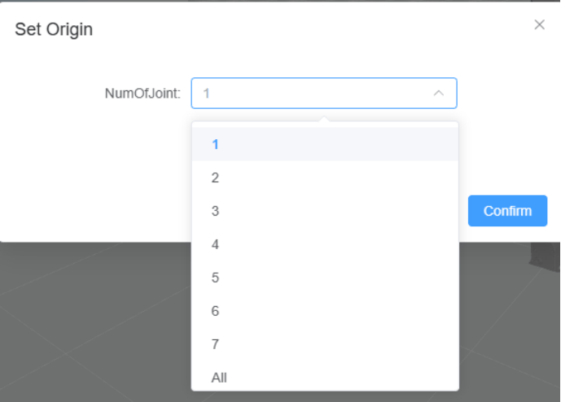
시스템 설정
관절 제한
실제 작업에 맞춰 각 관절의 동작 범위와 최대 허용 속도를 정합니다. 프로그램 오류 · 잘못된 조작 · 예상치 못한 간섭 때문에 로봇팔이 위험하게 움직여 충돌 · 과부하 · 손상이 생기는 것을 막습니다. 처음 값으로 되돌리려면 Reset을 누릅니다.

엔드 이펙터 속도
엔드 이펙터의 동작 성능을 세밀하게 맞추는 고급 설정입니다. 공정과 안전 요구 사항에 따라 엔드 이펙터 공구의 속도와 가속도 상한을 정합니다.

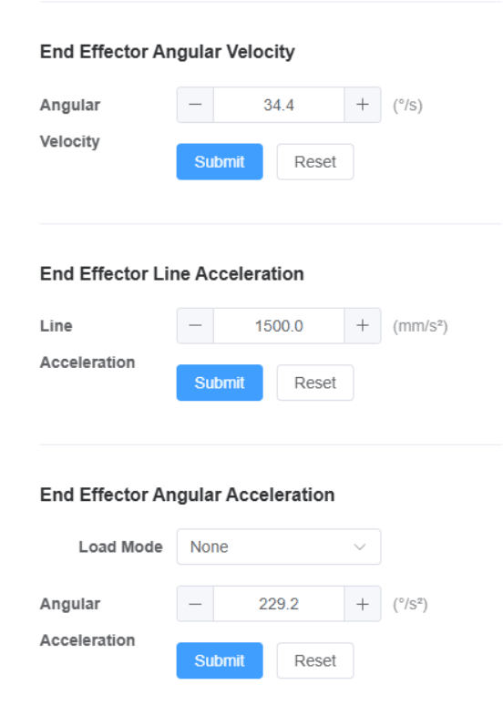
충돌 보호
각 관절이 충돌이나 비정상적인 저항에 반응하는 민감도를 정합니다. 뜻밖의 충돌이나 지나친 저항이 생기면 시스템이 바로 감지해 정한 수준에 따라 비상 정지하여, 사람을 보호하고 장비 손상을 막습니다.
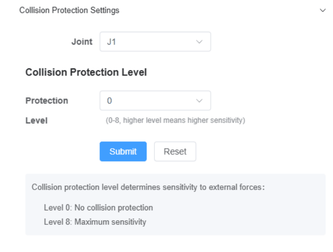
설치 자세
로봇팔 몸체의 물리적 설치 자세를 정합니다. 이 설정은 좌표계 교정의 기본 단계이며, 동작 제어 논리와 공간 좌표 계산에 직접 영향을 줍니다. 실제 환경에 맞춰 수직 · 수평 · 천장(거꾸로) 설치 중에서 고릅니다.
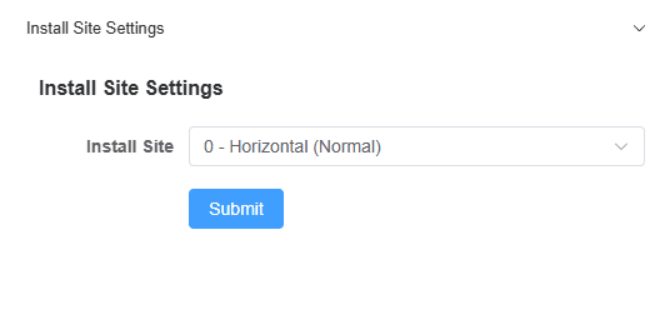
엔드 이펙터 구성
끝에 단 공구의 물리 속성(질량 · 무게 중심 · 크기)을 정의합니다. 이 값으로 제어 시스템이 공구 파라미터를 정확히 계산해, 동작을 정밀하게 제어하고 토크를 보상합니다.
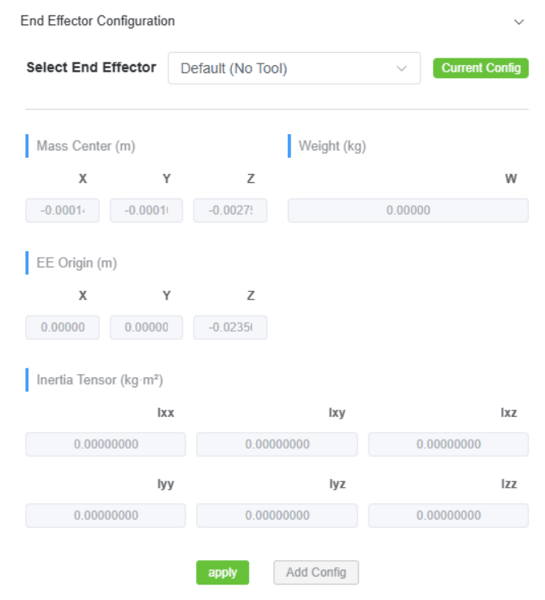
네트워크 설정
이더넷 포트와 Wi-Fi 핫스팟 설정을 설명합니다. 문서
이더넷 포트
네트워크 연결의 핵심 파라미터를 정합니다. 네트워크 프로토콜과 관련 파라미터를 직접 설정하면 장치가 네트워크에서 식별되고, 경로를 찾고, 도메인 이름을 해석할 수 있습니다. 그러면 장치가 대상 네트워크에 정상적으로 접속해 다른 장치나 서버와 통신할 수 있습니다.

로봇팔의 IP 주소를 직접 정한 뒤 이더넷으로 컴퓨터와 연결합니다. 컴퓨터와 로봇팔이 같은 네트워크 대역에 있어야 통신할 수 있습니다.
핫스팟
로봇팔이 Wi-Fi 핫스팟으로 동작하는 데 필요한 기본 네트워크 파라미터를 정합니다. 그러면 모바일 기기 같은 다른 장치가 Wi-Fi로 로봇팔에 접속해 무선으로 데이터를 주고받고 로봇팔을 제어할 수 있습니다.
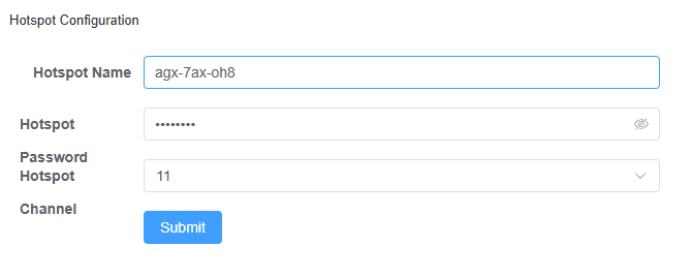
업그레이드
소프트웨어 버전 관리와 관절 모듈 펌웨어 업그레이드를 설명합니다. 문서
소프트웨어 업그레이드
로봇팔의 소프트웨어 버전 관리와 시스템 업그레이드 화면입니다. 이 화면에서 펌웨어 버전 조회 · 시스템 업데이트 · 소프트 재시작을 할 수 있습니다.

펌웨어 업그레이드
관절 모듈의 펌웨어를 업그레이드합니다. 관절 정보 확인과 관절 하드웨어 버전 조회도 지원해, 업그레이드를 안정적으로 하고 관절 모듈의 호환성을 확보합니다.
펌웨어를 업그레이드할 때는 먼저 Upgrade Mode를 눌러 업그레이드 모드로 들어간 뒤 관절 펌웨어를 업그레이드하십시오. 업그레이드 중에는 로봇팔이 Disable되므로 안전한 자세에 두십시오. 모든 관절 모듈의 업그레이드가 끝나면 반드시 Exit Upgrade를 누르십시오. 누르지 않으면 로봇팔을 쓸 수 없습니다.

업그레이드할 때 알아 둘 점
AgileX 지원 문서 Upgrade NERO to V1.121(2026-04-22)의 주의 사항입니다. 업그레이드 파일은 AgileX 기술 지원에서 받습니다.
- 소프트웨어 업그레이드 파일을 올린 뒤 목록에서 골라 바로 업그레이드합니다. 막대가 끝까지 찰 때까지 기다리십시오.
- 처음 업그레이드는 업그레이드 스크립트가 바뀌는 과정이라 실패할 수 있고 시간도 오래 걸립니다. 실패하면 업그레이드를 다시 누르십시오.
- 끝나면 시스템 재시작 버튼을 누르거나 전원을 껐다 켭니다. 오래 기다려도 다시 시작되지 않으면 전원을 껐다 켜십시오.
- 펌웨어 업그레이드 모드에서는 로봇팔의 모든 노드와 펌웨어 버전이 보입니다. 그리퍼가 있으면 그리퍼 노드는
A로 표시됩니다.A가 아니면 그리퍼 ID를 바꿔야 합니다 (2장 '기존 그리퍼 호환'). - 그리퍼 펌웨어가 V1.x.x로 보이면 웹 제어 화면으로는 업그레이드할 수 없습니다. AgileX 기술 지원에 문의하십시오.
- 모든 노드를 업그레이드한 뒤 업그레이드 모드에서 나왔다가 다시 들어가 버전을 확인하고, 다시 Exit Upgrade를 누릅니다.
- 업그레이드 뒤에는 SDK 프로필을 새 펌웨어 버전에 맞추십시오 (11장).
소프트웨어 업그레이드 중에는 로봇팔 전원을 끄지 마십시오.
2차 개발: SDK · ROS 2 · CAN
AgileX Python SDK(pyAgxArm)와 ROS 2 드라이버(agx_arm_ros)로 개발 PC에서 NERO를 처음 연결해 움직이는 데까지 설명합니다. API 전체는 AgileX GitHub를 보십시오. WeGo의 원격조작 · 데이터 수집 소프트웨어는 WeGo NERO Studio 사용 가이드에서 설명합니다.
개발 자료 문서
| 내용 | 주소 | 라이선스 |
|---|---|---|
| Python SDK | github.com/agilexrobotics/pyAgxArm | LGPL-3.0 |
| ROS 2 드라이버 (Humble · Jazzy) | github.com/agilexrobotics/agx_arm_ros (ros2 브랜치) | MIT |
| URDF | github.com/agilexrobotics/agx_arm_urdf (nero 폴더) | MIT |
| MoveIt2 · Gazebo · MuJoCo | github.com/agilexrobotics/agx_arm_sim | MIT (README 표기) |
| Windows CAN 플러그인 | github.com/agilexrobotics/python-can-agx-cando | MIT |
| CAN 프로토콜 | kb.agilex.ai의 NERO CAN 프로토콜 문서 · AgileX 기술 지원 | — |
라이선스는 2026-11-19에 GitHub에서 확인했습니다. 모두 상업적 사용을 허용합니다 (LGPL-3.0은 SDK를 고쳐 배포할 때 고친 소스를 공개해야 합니다).
펌웨어 버전과 SDK 프로필 SDK
pyAgxArm은 로봇팔 펌웨어 버전마다 다른 드라이버 프로필을 씁니다. 펌웨어 버전은 웹 제어 화면의 업그레이드 화면(10장)이나 SDK의 get_firmware()로 확인합니다. 설정 인자 이름은 SDK에 firmeware_version으로 적혀 있습니다 (철자 그대로).
| 로봇팔 펌웨어 | SDK 프로필 | CAN 피드백 |
|---|---|---|
| 1.10 이하 | NeroFW.DEFAULT | 웹 제어 화면에서 CAN 송신을 켜거나, Enable할 때 set_normal_mode()를 부릅니다 |
| 1.11 | NeroFW.V111 | |
| 1.12 | NeroFW.V112 | 전원을 넣으면 바로 나옵니다. normal 모드가 없고 leader · follower만 있으며, 기본값은 follower입니다 |
| 1.20 | NeroFW.V120 | |
| 1.21 이상 | NeroFW.V121 |

CAN 활성화 SDK
로봇팔과 함께 온 USB-to-CAN 모듈만 지원합니다. 개발 PC는 Ubuntu 20.04 · 22.04(권장) · 24.04, Python 3.6 이상을 씁니다. CAN 속도는 1 Mbps(1000000)입니다.
sudo apt update && sudo apt install can-utils ethtool sudo ip link set can0 up type can bitrate 1000000 # 모듈 하나일 때 candump can0 # 데이터가 흐르는지 확인 (펌웨어 1.11 이하는 CAN 송신을 켠 뒤)
pyAgxArm의 pyAgxArm/scripts/ubuntu에 있는 스크립트로도 됩니다: bash find_all_can_port.sh는 모듈과 USB 포트를 보여 주고, bash can_activate.sh can0 1000000은 모듈 하나를 활성화합니다. 두 팔이면 13장을 보십시오.
Windows는 python-can-agx-cando 플러그인을 설치하고 interface="agx_cando", channel="0"을, macOS는 interface="slcan", channel="/dev/ttyACM0"을 씁니다.
Python SDK 빠른 시작 SDK
pip3 install python-can pip3 install "git+https://github.com/agilexrobotics/pyAgxArm.git"
Ubuntu 24.04에서 pip 설치가 막히면 pyAgxArm의 docs/ubuntu_24_04_pip_install.md를 보십시오. 아래 예제는 연결 → 펌웨어 확인 → Enable → J1을 0.1 rad 움직이고 도착을 기다립니다.
import time
from pyAgxArm import create_agx_arm_config, AgxArmFactory, ArmModel, NeroFW
cfg = create_agx_arm_config(robot=ArmModel.NERO,
firmeware_version=NeroFW.V121, # 펌웨어에 맞게 (위 표)
channel="can0")
robot = AgxArmFactory.create_arm(cfg)
robot.connect()
print(robot.get_firmware()) # 예: {'software_version': '1.21', ...}
while not robot.enable(): # 모든 관절 Enable
time.sleep(0.01)
robot.set_speed_percent(20) # 처음에는 느리게
time.sleep(0.2)
target = list(robot.get_joint_angles().msg) # 현재 관절 각 (rad, 7개)
target[0] += 0.1 # J1만 +0.1 rad
robot.move_j(target)
time.sleep(0.5)
start = time.monotonic()
while time.monotonic() - start < 5.0: # motion_status 0 = 목표 도착
st = robot.get_arm_status()
if st is not None and st.msg.motion_status == 0:
break
time.sleep(0.1)
| 항목 | 동작 |
|---|---|
| Disable 상태 | 동작 명령(move_*), 모드 전환, 속도 · 파라미터 설정은 로봇팔이 Enable된 뒤에만 적용됩니다. Disable 상태에서 보낸 명령은 컨트롤러가 무시합니다. |
| 명령 덮어쓰기 | move_j · move_p · move_l · move_c를 이어서 보내면 앞의 목표를 덮어씁니다. |
| 위치 · 속도 모드와 MIT 모드 | move_j · move_p · move_l · move_c는 컨트롤러가 부드럽게 보간합니다. move_js · move_mit는 보간 없이 바로 전달하므로 빠르지만 위험합니다. MIT 단일 관절 제어는 잘못 쓰면 로봇팔이 손상될 수 있습니다. |
| 관절 한계 | SDK의 관절 한계 자르기는 기본값이 꺼짐입니다. set_joint_limits_enabled(True)로 켜면 1장의 SDK 한계 값으로 명령을 자릅니다. |
| 리더 모드 | 리더 모드에서는 disable()이 무시될 수 있습니다. 먼저 set_follower_mode()(1.12 이상) 또는 set_normal_mode()(1.11 이하)로 바꾸십시오. |
disable(): 관절이 들려 있으면 팔이 바로 떨어집니다. 팔을 받치거나 안전한 자세에서 부르십시오.electronic_emergency_stop(): 비상 정지 상태로 바꿉니다. 팔이 들려 있으면 일정한 댐핑으로 천천히 내려옵니다. Enable 상태에서만 듣습니다.reset(): 비상 정지 뒤(Enable 상태)에만 듣고, 모드를 초기화하며 바로 전원을 끊어 팔이 떨어집니다.
ROS 2 빠른 시작 SDK
agx_arm_ros는 ROS 2 Humble · Jazzy에서 시험된 드라이버입니다. 가상 환경 밖에서 설치 · 빌드하십시오 (which pip3로 확인).
# 1. SDK (Jazzy는 끝에 --break-system-packages) git clone https://github.com/agilexrobotics/pyAgxArm.git cd pyAgxArm && pip3 install . # 2. 드라이버 mkdir -p ~/agx_arm_ws/src && cd ~/agx_arm_ws/src git clone -b ros2 --recurse-submodules https://github.com/agilexrobotics/agx_arm_ros.git # 3. 의존 패키지 (스크립트 하나로) cd ~/agx_arm_ws/src/agx_arm_ros/scripts && bash ./agx_arm_install_deps.sh # 4. 빌드 cd ~/agx_arm_ws && colcon build && source install/setup.bash # 5. CAN 활성화 (모듈 하나) cd ~/agx_arm_ws/src/agx_arm_ros/scripts && bash can_activate.sh
드라이버를 실행합니다. arm_type:=nero를 꼭 넣으십시오 (기본값은 piper). RViz와 함께 띄우려면 start_single_agx_arm_rviz.launch.py, MoveIt2까지 띄우려면 start_single_agx_arm_moveit.launch.py를 씁니다.
ros2 launch agx_arm_ctrl start_single_agx_arm.launch.py can_port:=can0 arm_type:=nero \
effector_type:=none tcp_offset:='[0.0, 0.0, 0.0, 0.0, 0.0, 0.0]'
| 인자 | 기본값 | 설명 |
|---|---|---|
can_port | can0 | 로봇팔이 연결된 CAN 인터페이스 |
arm_type | piper | nero로 바꿉니다 |
effector_type | none | none · agx_gripper · revo2 · revo2_pro · revo2_touch (12장) |
revo2_type | left | Revo2 손의 좌우 (left · right) |
namespace | (없음) | 로봇팔 인스턴스 네임스페이스. 두 팔이면 팔마다 다르게 (13장) |
auto_enable | true | 실행할 때 자동 Enable |
speed_percent | 0 | 1 ~ 100일 때만 속도(%)를 설정하고, 그 밖에는 SDK 기본값 |
fw_version | (없음) | 비워 두면 펌웨어 버전을 자동으로 읽습니다 |
tcp_offset | 모두 0 | 플랜지 기준 TCP 오프셋 [x, y, z, rx, ry, rz] (m · rad, 모두 실수로) |
control_enabled | true | false면 /control/* 명령을 거부하고 피드백만 냅니다 |
다른 터미널에서 시험 명령을 보냅니다. test/nero/test_move_j.yaml은 모든 관절을 0으로 보내므로 로봇팔이 수직 영점 자세로 크게 움직입니다. 주변을 비우십시오.
cd ~/agx_arm_ws && source install/setup.bash && cd src/agx_arm_ros ros2 topic pub /control/move_j sensor_msgs/msg/JointState "$(cat test/nero/test_move_j.yaml)" -1 ros2 topic echo /feedback/joint_states ros2 service call /emergency_stop std_srvs/srv/Empty
| 이름 | 형식 | 설명 |
|---|---|---|
/feedback/joint_states | sensor_msgs/JointState | 관절 상태 |
/feedback/tcp_pose | geometry_msgs/PoseStamped | TCP 자세 |
/feedback/arm_status | diagnostic_msgs/DiagnosticArray | 로봇팔 상태 (15장의 상태 코드) |
/feedback/motor_status | diagnostic_msgs/DiagnosticArray | 관절 모터별 Enable · 온도 · 고장 플래그 |
/feedback/leader_joint_states | sensor_msgs/JointState | 리더 팔 관절 상태 (리더 모드) |
/control/move_j | sensor_msgs/JointState | 관절 이동 |
/control/move_p | geometry_msgs/PoseStamped | 점 대 점 이동 |
/control/move_l | geometry_msgs/PoseStamped | 직선 이동 |
/control/move_c | geometry_msgs/PoseArray | 원호 이동 (시작 → 중간 → 끝) |
/control/joint_states | sensor_msgs/JointState | 관절 제어 (그리퍼 · 손 관절 포함) |
/enable_agx_arm | std_srvs/SetBool | Enable · Disable |
/move_home | std_srvs/Empty | 영점 자세로 이동 |
/emergency_stop | std_srvs/Empty | 비상 정지 (현재 위치 유지) |
/control_enable | std_srvs/SetBool | /control/* 명령 받기 켜기 · 끄기 |
Ctrl+C로 드라이버를 끝내도 로봇팔은 Disable되지 않습니다. 멈출 때는 /control_enable을 false로 끄고, 팔을 받치거나 안전한 자세에 둔 뒤 /enable_agx_arm에 false를 보내고,
/feedback/motor_status의 모든 모터가 enabled=false인지 확인한 다음 끝내십시오.
CAN 프로토콜
로봇팔에는 개발용 CAN 인터페이스가 있어, 이 인터페이스로 명령을 보내 로봇팔을 제어할 수 있습니다. CAN 통신은 CAN 2.0B 표준을 따르고, 통신 속도는 1000 k이며, 메시지는 MOTOROLA(MSB) 형식입니다. CAN 명령으로 개발하려면 AgileX 기술 지원팀에 CAN 프로토콜 설명서를 요청하십시오.
BrainCo Revo2 손
NERO 끝단에 BrainCo Revo2 다관절 손을 달아 쓰는 구성을 설명합니다. 장착, 장착 뒤 설정, 웹 제어 화면의 다관절 손 화면, SDK · ROS 2 제어 순입니다. 손 자체의 사양과 단독 사용은 BrainCo Revo2 다관절 손 운용 설명서를 보십시오.
구성 문서
- 손은 플랜지 부속품으로 끝 플랜지에 고정하고, 부속품의 전원 · 통신 케이블로 끝 관절의 XT30 (2+2) 인터페이스(24 V, 최대 2 A, 3장)에 연결합니다.
- 손은 로봇팔과 같은 CAN 버스로 통신합니다. 개발 PC 쪽에서는 로봇팔의 USB-to-CAN 모듈 하나로 팔과 손을 함께 다루며, SDK와 ROS 2 드라이버는 손을 로봇팔 드라이버의 끝단 장치(effector)로 다룹니다.
- Revo2 Pro · Revo2 Touch는 AgileX 변환 보드를 거쳐 로봇팔 버스에 연결합니다 (pyAgxArm 문서).
| 손 | SDK 끝단 장치 | ROS 2 인자 | 손가락 위치 | 비고 |
|---|---|---|---|---|
| Revo2 | REVO2 | revo2 | 0 ~ 100 | /control/hand · /feedback/hand_status 지원 |
| Revo2 Pro | REVO2_PRO | revo2_pro | 0 ~ 1000 | bc-stark-sdk(MIT) 필요. ROS 2는 /control/joint_states만 |
| Revo2 Touch | REVO2_TOUCH | revo2_touch | 0 ~ 1000 | Revo2 Pro 기능 + 정전식 촉각. 나머지는 Pro와 같음 |
손가락 위치 0은 완전히 편 상태, 최댓값(100 또는 1000)은 완전히 쥔 상태입니다.
끝 관절 CAN에는 AgileX 장치만 연결할 수 있습니다 (3장). AgileX에서 산 손이 아니면 웹 제어 화면의 다관절 손 화면을 조작하지 마십시오.
장착 문서
- 로봇팔을 설치대에 고정합니다.다관절 손과 플랜지 부속품(플랜지와 볼트)을 꺼냅니다.
- 플랜지를 설치합니다.
- M3 × 6 육각 렌치 볼트(접시머리) 6개로 배플을 모터 출력축에 고정합니다.
- M3 × 8 육각 렌치 볼트(접시머리) 4개로 배플 양쪽에 플랜지를 고정합니다.
- 다관절 손을 플랜지에 끼웁니다 (케이블 출구를 플랜지 틈 가운데에 맞춥니다).
- M3 × 6 나사 4개로 다관절 손을 플랜지에 고정합니다. 플랜지 설치도는 그림 33(부록)입니다.
- 케이블을 연결합니다.부속품의 전원 · 통신 케이블을 끝 관절 인터페이스와 손의 인터페이스에 연결합니다.
- 전원과 CAN을 연결합니다.항공 케이블을 로봇팔에 연결하고, USB-to-CAN 모듈을 항공 케이블에 연결합니다(노란색 선은 CAN-H, 파란색 선은 CAN-L). 모듈의 USB 케이블을 컴퓨터에 꽂고, 항공 케이블을 어댑터에 연결한 뒤 어댑터 전원을 넣습니다.
장착 뒤 설정 문서
- 엔드 이펙터 구성: 웹 제어 화면 시스템 설정의 엔드 이펙터 구성(8장)에 손의 질량 · 무게 중심을 넣고 적용합니다. 손을 달았는데 끝단 무게가 0이거나 실제보다 작으면 보상 토크가 모자라 손 무게에 팔이 끌려 내려가고, 놓으면 관절이 되튕깁니다. 반대로 달지 않은 부하를 넣으면 팔이 위로 들립니다. 손의 질량 · 무게 중심 값은 AgileX 문서에 없습니다. BrainCo 사양이나 AgileX 기술 지원에서 확인하십시오 (확인 필요).
- 설치 자세: 바닥 · 측면 · 천장 설치를 실제와 맞춥니다 (5장).
- 영점 교정: 손을 단 채로는 자동 교정을 쓰지 마십시오. 수동 교정을 쓰거나, 손을 떼고 부하 없음으로 설정한 뒤 자동 교정합니다 (5장).
웹 제어 화면의 다관절 손 화면 문서
끝단에 단 다관절 손을 제어하는 화면(Dexterous Hand 탭)입니다. 손의 독립된 6자유도를 각각 조절해 잡기와 손 모양을 만듭니다 (AgileX 중문 사용 설명서 6.3절).
- 제어 모드: 드롭다운 메뉴에서 위치 제어 · 속도 제어 · 전류 제어 중에서 고릅니다. 위치 제어는 손가락 관절을 목표 위치로 보내며, 손가락 자세와 벌림 정도를 정확히 맞출 때 씁니다. 속도 제어 · 전류 제어의 설명은 AgileX 문서에 아직 비어 있습니다.
- 관절 조작: 모드마다 손의 6개 구동 관절에 하나씩 슬라이더가 있습니다. 슬라이더를 끌거나 입력 칸에 값을 넣어 움직입니다.
전류 제어 모드에서는 잡을 물체에 맞게 한계값을 정하십시오. 토크가 너무 크면 물체나 손 내부 구조가 상할 수 있습니다.
SDK로 제어 SDK
pyAgxArm에서 손은 로봇팔 드라이버의 끝단 장치입니다. init_effector()는 connect() 전에 한 번만 부를 수 있으며, 끝단 장치 두 개를 함께 만들 수는 없습니다.
import time from pyAgxArm import create_agx_arm_config, AgxArmFactory, ArmModel, NeroFW cfg = create_agx_arm_config(robot=ArmModel.NERO, firmeware_version=NeroFW.V121, channel="can0") robot = AgxArmFactory.create_arm(cfg) hand = robot.init_effector(robot.OPTIONS.EFFECTOR.REVO2) # connect() 전에 robot.connect() time.sleep(0.2) hand.position_ctrl() # 모두 0: 손을 폅니다 hand.position_ctrl(thumb_tip=0, thumb_base=0, index_finger=50, middle_finger=50, ring_finger=50, pinky_finger=50) print(hand.get_finger_pos().msg) # 손가락 위치 0 ~ 100
| 함수 | 값 |
|---|---|
position_ctrl() | 손가락마다 목표 위치 0 ~ 100. 인자를 주지 않은 손가락은 0(폄)으로 보냅니다 |
speed_ctrl() | 손가락마다 목표 속도 −100 ~ 100 |
current_ctrl() | 손가락마다 목표 전류 −100 ~ 100 |
position_time_ctrl() | mode="pos"로 목표 위치를 보내고, 50 ms 안에 mode="time"으로 도달 시간(0 ~ 255, 10 ms 단위)을 보냅니다 |
get_finger_pos() · get_finger_spd() · get_finger_current() | 손가락별 위치 · 속도 · 전류 피드백 |
get_hand_status() | 좌우(1 왼손 · 2 오른손)와 손가락 모터 상태(0 정지 · 1 동작 · 2 걸림) |
is_ok() | 손 데이터를 최근에 받았는지 |
손가락 이름은 thumb_tip(엄지 끝) · thumb_base(엄지 밑동) · index_finger · middle_finger · ring_finger · pinky_finger입니다.
Revo2 Pro · Revo2 Touch는 pip install bc-stark-sdk 뒤 robot.OPTIONS.EFFECTOR.REVO2_TOUCH(또는 REVO2_PRO)로 만들고, hand.set_finger_positions([500] * 6)처럼 0 ~ 1000 값을 엄지 굽힘 · 엄지 보조 · 검지 · 중지 · 약지 · 소지 순으로 줍니다. 좌우는 자동으로 알아내며 hand.set_hand_side("right")로 정할 수도 있습니다.
- Revo2 Touch 손에는
REVO2_TOUCH를 쓰십시오. 기본REVO2끝단 장치의 프로토콜에는 Touch 손이 따르지 않았습니다. - Revo2 Pro · Touch 함수는 한 번에 응답을 기다리는 왕복 호출이며, 손이 응답하지 않으면 한 번에 약 2초가 걸렸습니다. 빠른 제어 루프 안에서 직접 부르지 말고 별도 스레드에서 부르십시오.
WeGo 듀얼 NERO 원격조작 장비의 코드 기록(2026-10-14 ~ 16)입니다. 두 팔에 함께 달 때의 주의는 13장에 있습니다.
ROS 2로 제어 SDK
ros2 launch agx_arm_ctrl start_single_agx_arm.launch.py can_port:=can0 arm_type:=nero \
effector_type:=revo2 revo2_type:=left
# 다른 터미널, ~/agx_arm_ws/src/agx_arm_ros 에서
ros2 topic pub /control/hand agx_arm_msgs/msg/HandCmd "$(cat test/hand/test_hand_position.yaml)" -1
ros2 topic echo /feedback/hand_status
/control/hand(위치 · 속도 · 전류)와/control/hand_position_time은revo2에서만 됩니다. 위치 0 ~ 100, 속도 · 전류 −100 ~ 100, 시간 0 ~ 255(10 ms 단위)이며, 범위를 벗어난 명령은 실행하지 않고 경고 로그를 남깁니다./control/joint_states로는revo2·revo2_pro·revo2_touch모두 팔 관절과 손 관절을 함께 보낼 수 있습니다.
WeGo의 듀얼 NERO + Revo2 Touch 원격조작 장비에서 손을 시험하는 방법은 WeGo NERO Studio 사용 가이드 6.4절을 보십시오.
듀얼암 구성
NERO 두 대를 개발 PC 한 대에서 함께 쓰는 구성을 설명합니다. 팔마다 CAN 채널을 하나씩 두고 이름을 고정한 뒤, SDK · ROS 2에서 팔마다 인스턴스를 하나씩 만듭니다.
구성
- 팔마다 항공 커넥터(전원 + CAN)와 USB-to-CAN 모듈이 하나씩 있습니다. 팔 하나가 CAN 채널 하나입니다. 손이나 그리퍼를 달면 그 팔의 CAN으로 함께 통신합니다 (12장) 문서.
- WeGo 원격조작 장비는 몸통 마운트에 NERO 두 대를 달고 CAN 이름을
can_left(왼팔 + 왼손) ·can_right(오른팔 + 오른손)로 고정해 씁니다. 손은 Revo2 Touch 또는 2지 그리퍼입니다 (NERO Studio 사용 가이드 3장) 실측. - AgileX는 책상용 듀얼암 지지대 · 산업용 PC · 카메라 · 티칭 장치를 묶은 데이터 수집 키트 OPEN NERO를 따로 팝니다. 키트의 소프트웨어는 이 책에서 다루지 않으며, AgileX OPEN NERO 套件 用户手册을 보십시오.
CAN 모듈 이름 고정 SDK
Linux는 꽂은 순서대로 can0 · can1 이름을 붙이므로, 다시 꽂거나 재부팅하면 왼팔 · 오른팔이 바뀔 수 있습니다. pyAgxArm의 스크립트(pyAgxArm/scripts/ubuntu)로 USB 포트마다 이름을 고정하십시오.
- 모듈의 USB 포트 주소를 기록합니다.모듈을 하나씩만 꽂고 실행해, 나온 USB 포트 값(예:
3-1.4:1.0)을 팔마다 적어 둡니다. 두 모듈은 서로 다른 USB 포트에 꽂으십시오.bash find_all_can_port.sh # Interface can0 is connected to USB port 3-1.4:1.0 can_muti_activate.sh에 포트와 이름을 적습니다.USB_PORTS["3-1.4:1.0"]="can_left:1000000" USB_PORTS["3-1.1:1.0"]="can_right:1000000"
- 활성화하고 확인합니다.
bash can_muti_activate.sh를 실행한 뒤ip link(또는ifconfig)에can_left·can_right가 보이는지 확인합니다.
모듈을 다른 USB 포트(허브 포트 포함)로 옮기면 주소가 바뀌므로 1단계부터 다시 하십시오.
두 팔 제어 SDK
SDK에서는 팔마다 인스턴스를 하나씩 만들고 channel만 다르게 줍니다. 손도 팔마다 그 팔의 인스턴스에서 만듭니다.
def nero(ch):
return AgxArmFactory.create_arm(create_agx_arm_config(
robot=ArmModel.NERO, firmeware_version=NeroFW.V121, channel=ch))
left, right = nero("can_left"), nero("can_right")
left.connect(); right.connect()
ROS 2에서는 드라이버를 팔마다 하나씩, namespace와 can_port를 다르게 해서 띄웁니다. 각 드라이버의 토픽 · 서비스가 자기 네임스페이스 아래에 생깁니다.
ros2 launch agx_arm_ctrl start_single_agx_arm.launch.py namespace:=left can_port:=can_left arm_type:=nero ros2 launch agx_arm_ctrl start_single_agx_arm.launch.py namespace:=right can_port:=can_right arm_type:=nero
리더 · 팔로워로 두 팔 잇기 문서
한 팔을 손으로 끌어(리더) 다른 팔이 따라 하게(팔로워) 할 수 있습니다. 웹 제어 화면의 협업 제어(8장)나 SDK의 set_leader_mode() · set_follower_mode()로 정합니다.
- 연결하기 전에 두 팔을 모두 영점 가까이에 두십시오. 팔로워 팔이 리더 팔의 자세로 빠르게 따라갑니다.
- 두 팔을 모두 팔로워로 두지 말고, 두 팔이 연결된 상태에서 CAN 송신을 동시에 켜지 마십시오. 외부 CAN 통신에 이상이 생겨 장치를 다시 시작해야 합니다.
- 리더 팔의 관절 각은 SDK
get_leader_joint_angles(), ROS 2/feedback/leader_joint_states로 읽습니다. - 리더 팔과 팔로워 팔이 같은 CAN 모듈에 연결되어 있으면 ROS 2 드라이버의
fw_version을 직접 넣어 자동 버전 읽기를 건너뛰십시오. 리더 팔도 버전을 응답해, 같은 ID의 데이터가 한 모듈로 함께 들어오면 이상이 생길 수 있습니다. - 리더 모드의 팔은
disable()을 무시할 수 있습니다. Disable하기 전에 팔로워 모드로 바꾸십시오 (11장).
리더 · 팔로워용으로 두 팔의 CAN을 한 버스로 묶는 배선과 종단 저항 설정은 NERO 문서에 없습니다 (확인 필요). PiPER와 같다고 가정하지 말고 AgileX 기술 지원에 확인하십시오.
두 팔에 Revo2 Touch 달기 실측
WeGo 장비는 팔마다 Revo2 Touch를 하나씩 달고, 한 프로그램 안에서 두 팔의 pyAgxArm 인스턴스로 두 손을 함께 제어합니다. 2026-10-14에 그때 설치된 bc-stark-sdk로 확인한 동작입니다.
- bc-stark-sdk는 프로세스 전체에서 CAN 송수신 콜백을 한 쌍만 두고,
REVO2_TOUCH끝단 장치를 만들 때마다 그 팔의 통로로 콜백을 바꿉니다. 그래서 두 팔을 한 프로세스에서 만들면 마지막에 만든 팔이 두 손의 데이터를 모두 실어 나르고, 다른 쪽 손은 응답하지 않았습니다. - WeGo는 콜백을 다시 등록해 손의 장치 ID(왼손
0x7E· 오른손0x7F)에 따라 각 팔의 통로로 나눠 보내도록 해결했습니다.
유지 보수와 비상 대응
로봇팔이 오래 높은 성능을 유지하려면 정기적으로 정비해야 합니다. 모든 정비는 이 설명서의 지시를 엄격히 따라야 합니다. 문서
보관
쓴 뒤에는 영점 교정을 하고 전원을 끈 뒤 보관합니다. 배선을 정리해 엉키거나 지나치게 당겨지지 않게 합니다. 작동 · 보관 환경은 온도 −20 ~ 50 °C, 습도 25 ~ 85 %(결로 없음)입니다.
정비
정비는 로봇팔을 영점에 되돌리고 전원을 끈 상태에서 합니다. 전원을 끈 뒤 다음 작업을 합니다. 주기는 AgileX OPEN NERO 키트 설명서의 값입니다.
| 항목 | 할 일 | 주기 |
|---|---|---|
| 청소 | 물티슈나 물에 살짝 적신 천으로 로봇팔의 먼지 · 때 · 기름을 닦습니다 | 매주 |
| 나사 조임 | 바깥에 보이는 나사가 모두 단단한지 확인합니다 | 매주 |
| 케이블 점검 | 전원 케이블과 CAN 케이블이 단단히 연결되었는지, 피복이 상하지 않았는지 봅니다 | 매월 |
| 모터 점검 | 모터와 구조 부품에 손상 · 변형이 없는지 봅니다 | 6개월 또는 3000시간 |
비상 대응
비상 시에는 항공 커넥터를 직접 뽑아 전원을 끊을 수 있습니다. 웹 제어 화면에서는 EmergencyStop 버튼으로 움직임을 즉시 멈출 수 있습니다 (7장).
프로그램으로 제어 중이면 SDK의 electronic_emergency_stop()(팔이 천천히 내려옴)이나 ROS 2의 /emergency_stop 서비스(현재 위치 유지)를 씁니다 (11장).
전원이 꺼지면 로봇팔이 비활성화되어 바로 떨어집니다. 로봇팔이 손상되거나 주변 환경 · 사람이 피해를 입지 않도록 각별히 주의하십시오. 커넥터를 뽑아 전원을 끊는 것은 비상 조치일 뿐이며, 부상을 막는 수단이 아닙니다.
문제 해결
증상 → 원인 → 조치 순으로 정리했습니다. 먼저 베이스 표시등(3장)과 웹 제어 화면 첫 화면의 로봇팔 상태(7장)를 보십시오. 이 장으로 풀리지 않으면 WeGo(go.support@wego-robotics.com)나 AgileX 기술 지원(support@agilex.ai)에 문의하십시오.
연결 · 통신 SDK
| 증상 | 원인 | 조치 |
|---|---|---|
| 표시등이 빨간색 | Enable하지 않았거나 이상이 있음 | 전원을 막 넣은 뒤의 빨간색은 정상 대기입니다. Enable해도 빨간색이면 웹 제어 화면에서 로봇팔 상태를 보고, 원인을 없앤 뒤 ClearError를 누릅니다 |
| 표시등이 녹색이 되지 않음 | 초기화가 끝나지 않음, 전원 문제 | 잠시 기다립니다. 어댑터에서 24 V가 나오는지, 항공 커넥터가 끝까지 들어갔는지 확인합니다 |
candump에 데이터가 없음 | 펌웨어 1.11 이하에서 CAN 송신이 꺼짐 · SDK 프로필이 펌웨어와 다름 · CAN 속도가 1000000이 아님 · CAN_H와 CAN_L이 바뀜 · 피복이 덜 벗겨져 구리선이 닿지 않음 | CAN 송신을 켜거나 set_normal_mode()(11장) · 프로필 확인(11장) · bitrate 1000000으로 다시 활성화 · 노란색 CAN_H, 파란색 CAN_L · 선을 다시 물립니다 (4장) |
connect() 실패 | can0 인터페이스가 없음 | ip link와 find_all_can_port.sh로 모듈이 보이는지 확인하고 활성화합니다 |
| 통신이 자주 끊기거나 피드백이 멈춤 | USB-to-CAN 모듈 고장, USB 케이블 풀림 · 손상 | 전원을 끄고 항공 커넥터와 USB 케이블을 다시 꽂습니다. 데이터 전송이 되는 케이블로 바꿔 봅니다 |
커널 로그에 failed to xmit | 선을 다시 꽂는 중 · 접촉 불량 (WeGo 실측: 재배선 중 한 채널에서 10회) | 작업 중 아래 명령을 띄워 두고, 메시지가 나오면 그 채널의 배선과 USB를 점검합니다. 이때의 동작 기록은 무효로 칩니다
journalctl -k -f | grep -iE "xmit|disconnect" |
ROS 2: SendCanMessage failed | CAN 연결 이상 | CAN 활성화와 배선을 확인합니다 |
ROS 2: Agx_arm feedback lost | CAN이 끊기거나 전원이 꺼짐 | 연결을 되살리면 Agx_arm feedback recovered가 뜨고 드라이버가 다시 Enable을 시도합니다 |
| 원격조작 · 프로그램 중 팔이 갑자기 떨어짐 | 통신 주기 부족 (개발 PC CPU 과부하) | top으로 CPU 사용률을 보고 필요 없는 프로그램을 끕니다. 웹 제어 화면에서 통신 상태를 확인합니다 |
| 두 팔에 Revo2 Touch를 달았는데 한쪽 손만 응답함 | bc-stark-sdk의 송수신 콜백이 프로세스에 한 쌍뿐이라 마지막에 만든 팔이 두 손의 데이터를 모두 실어 나름 (WeGo 실측) | 손의 장치 ID에 따라 각 팔로 나눠 보내도록 콜백을 등록합니다 (13장) |
| Revo2 Touch 손이 SDK 명령에 응답하지 않음 | REVO2 끝단 장치로 만듦 (WeGo 실측) | REVO2_TOUCH로 만듭니다 (12장) |
| 두 팔을 이은 뒤 CAN 통신 이상 | 두 팔 모두 팔로워, 또는 두 팔이 연결된 채 CAN 송신을 함께 켬 | 장치를 다시 시작하고 한 팔만 리더로 둡니다 (13장) |
동작 · 설정 문서
| 증상 | 원인 | 조치 |
|---|---|---|
| "Please configure the correct control mode" | 웹 제어 모드가 아님 | 화면 위쪽 WEB 버튼을 누릅니다 (8장) |
| SDK 명령을 보내도 움직이지 않음 | Disable 상태에서는 제어 · 설정 명령이 적용되지 않음 | enable()이 True를 돌려줄 때까지 부른 뒤 명령합니다 |
| 목표로 가지 않고 오류 알림 | 도달할 수 없는 위치 · 경로에 해가 없음 · 관절 한계 초과 | 목표를 작업 공간 안쪽으로 바꾸거나 관절 이동(Joint · move_j)을 씁니다 |
| 드래그 · 리더 모드에서 놓으면 관절이 되튕기거나, 끌 때 무겁고 고르지 않음 | 설치 자세 · 엔드 이펙터 구성 · 부하 설정이 실제와 다름. 영점 어긋남 | 시스템 설정의 설치 자세 · 엔드 이펙터 구성을 실제와 맞추고 적용한 뒤 다시 시험합니다. 그래도 같으면 영점을 교정합니다 (5장) |
| 영점으로 돌려도 수직으로 서지 않음 | 영점 어긋남 | 5장 '영점 복원' |
리더 모드에서 disable()이 안 됨 | 리더 모드는 Disable을 무시할 수 있음 | 팔로워 모드로 바꾼 뒤 Disable합니다 (11장) |
| 예전 PiPER 그리퍼를 달자 기구학 · 중력 보정이 이상함 | 그리퍼 ID가 겹침 | 그리퍼 ID를 바꿉니다 (2장 '기존 그리퍼 호환') |
| 펌웨어 업그레이드 뒤 로봇팔을 쓸 수 없음 | Exit Upgrade를 누르지 않음 | 업그레이드 화면에서 Exit Upgrade를 누릅니다 (10장) |
| 소프트웨어 업그레이드가 처음에 실패 | 업그레이드 중 스크립트가 바뀜 | 업그레이드를 다시 누릅니다 (10장) |
로봇팔 상태 코드 SDK
로봇팔 상태는 웹 제어 화면, SDK get_arm_status().msg.arm_status, ROS 2 /feedback/arm_status의 arm_status로 읽습니다. 뜻은 pyAgxArm · agx_arm_ros 문서에서 옮겼고, 조치 칸은 그 뜻에 따라 WeGo가 정리했습니다.
| 값 | 뜻 | 조치 |
|---|---|---|
| 0x00 | 정상 | — |
| 0x01 | 비상 정지 | 원인을 없앤 뒤 다시 Enable합니다 (SDK는 reset() 뒤, 11장 경고) |
| 0x02 | 해 없음 | 목표 위치 · 자세를 바꿉니다 |
| 0x03 | 특이점 | J2 · J3 · J4 · J5가 0 근처가 아닌 자세로 목표를 바꿉니다 (5장) |
| 0x04 | 목표 각도가 한계를 넘음 | 관절 동작 범위(1장)와 관절 제한 설정(8장) 안으로 목표를 바꿉니다 |
| 0x05 | 관절 통신 이상 | err_status에서 어느 관절인지 보고, 케이블과 끝단 연결을 점검한 뒤 전원을 다시 넣습니다 |
| 0x06 | 관절 브레이크가 풀리지 않음 | 다시 Enable합니다. 계속되면 기술 지원에 문의합니다 |
| 0x07 | 충돌 발생 | 충돌 원인을 없애고 오류를 지운 뒤 Enable합니다. 너무 자주 걸리면 충돌 보호 수준(8장)을 확인합니다 |
| 0x08 | 드래그 티칭 중 과속 | 더 천천히 끕니다 |
| 0x09 | 관절 상태 이상 | 아래 관절 드라이버 플래그를 확인합니다 |
| 0x0A | 그 밖의 이상 | 기술 지원에 문의합니다 |
| 0x0B · 0x0C · 0x0D | 티칭 기록 중 · 티칭 실행 중 · 티칭 일시 정지 | 오류가 아니라 상태 표시입니다 |
| 0x0E | 메인 컨트롤러 NTC 과열 | 멈추고 식힙니다 (전원을 끄고 1시간, 2장). 반복되면 기술 지원에 문의합니다 |
| 0x0F | 방전 저항 NTC 과열 | 위와 같습니다 |
err_status에는 관절마다 각도 한계 초과(joint_i_angle_limit)와 통신 이상(communication_status_joint_i, i = 1 ~ 7) 플래그가 있습니다.
제어 모드 ctrl_mode는 0 대기 · 1 CAN 명령 제어 · 2 티칭 · 3 이더넷 제어 · 4 Wi-Fi 제어 · 5 원격 제어 · 6 연동 티칭 입력 · 7 오프라인 궤적 · 8 TCP 제어입니다.
관절 드라이버 플래그
관절마다 SDK get_driver_states(i).msg.foc_status, ROS 2 /feedback/motor_status로 읽습니다. ROS 2에서는 피드백이 2초 넘게 끊기면 그 모터 항목이 STALE이 되고 값이 unknown으로 바뀝니다. 이를 정상(false · 0)으로 읽지 마십시오.
| 플래그 | 뜻 |
|---|---|
undervoltage | 저전압. 전원 어댑터 · 항공 커넥터를 확인합니다 |
motor_overtemp · driver_overtemp | 모터 · 드라이버 과열. 멈추고 식힙니다 |
driver_overcurrent | 드라이버 과전류 |
collision_tripped | 충돌 보호가 동작함 |
stall_tripped | 걸림(stall) 보호가 동작함 |
driver_error | 드라이버 오류 |
치수 도면
AgileX 사용 설명서의 치수 도면입니다. 단위는 mm입니다. 문서
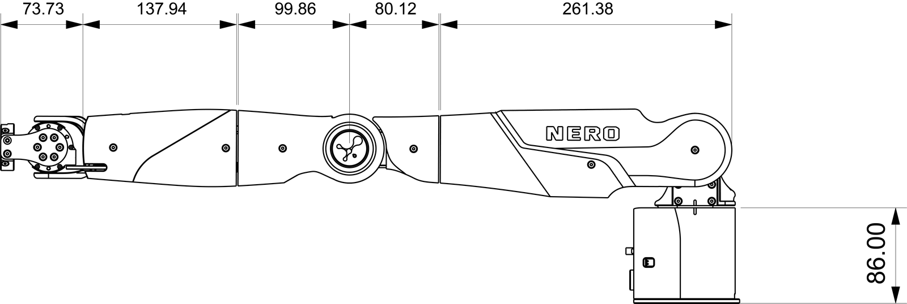
다관절 손을 단 로봇팔(정면 · 측면)과 다관절 손의 치수 도면은 AgileX NERO USER MANUAL 원문의 부록에 있습니다: agilexsupport.yuque.com